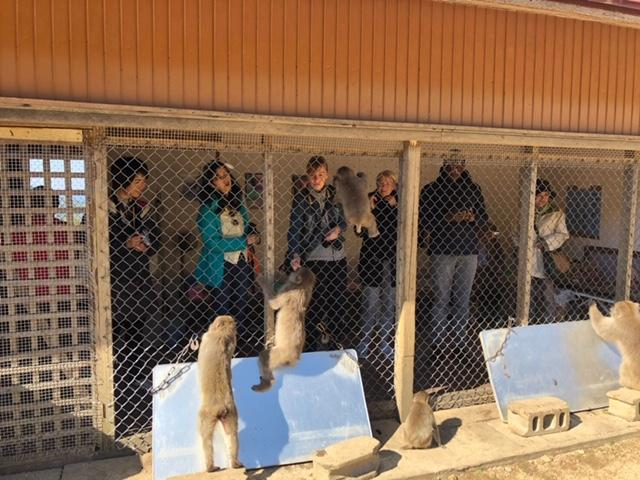

東京在住の外国の方をご案内＜小豆島編＞
11月10日にあげた大歩危・祖谷編の続きです。
遅すぎ...すいません！！！
モデルコース復習
羽田空港から高松空港へ入って、2泊3日の旅。関東・名古屋・福岡在住の方は、コトバスエクスプレス利用でもこのコースをなぞることができるので、参考にどうぞ！
1日目：
高松空港9：00着 → KOTOBUS IYAVALLEYに乗ってかずら橋夢舞台へ → タクシー乗換 →
ホテル祖谷温泉で昼食 → タクシー → 奥祖谷二重かずら橋 → 天空の村かかしの里 →
落合集落内 桃源郷 祖谷の山里で古民家ステイ
2日目：
落合集落内 なこちで朝ごはん → タクシー → フォレストアドベンチャー・祖谷でジップライン体験 →
タクシー → 祖谷のかずら橋・琵琶の滝をガイド案内 → 森のくまさんでランチ →
大歩危峡まんなかで遊覧船体験 → West-Westで体験ラフト → KOTOBUS IYAVALLEYで琴平へ →
琴平を少し散策後に高松に宿泊 夜は居酒屋ホッピング！
ここまでは前回ブログをご覧ください→../../../column/2018/11/post-76.html
3日目：
小豆島を貸切バスで1日観光 銚子渓・寒霞渓・二十四の瞳映画村・金両醤油・京宝亭・オリーブ公園・サイクリング → 最終便で羽田空港へ
小豆島をいいとこりで巡るなら、島巡り観光バスがおすすめです！
http://shodoshima-kotu.com/service/shodoshima/shuttlebus.html
小豆島について
瀬戸内海で2番目に大きな島、ほかの島と比べると信号やスーパーもあって、普通に大きな町。
なんですが！穏やかな瀬戸内海に囲まれた島らしい海の景色や
寒霞渓に代表する山・渓谷の景色もご覧いただける島です。
1泊2日で小豆島にお泊りすれば、ゆったり巡ることができます。
1日でまわるなら島巡り観光バス、もしくはレンタカーでいいとこどりがいいかもしれません。
路線バスもありますが、なにせ本数が少ない！都会とは違いますので、時刻表をしっかり調べてからいってくださいね！
小豆島は見どころも名物もたっくさん！
オリーブ、醤油、素麺などの伝統産業の見学、瀬戸内国際芸術祭のアートもみられますし
映画のロケ地としても有名です。
醤油やオリーブ味の珍しいソフトクリームもあります！どれも美味しいので食べ過ぎ注意。(笑)
あぁ、やっぱり1日では見きれないので、ぜひ行くなら1泊2日で！
観光地紹介
海外の皆様をご案内したのは...
銚子渓・寒霞渓・二十四の瞳映画村・金両醤油・京宝亭・オリーブ公園・ハローサイクリング
さて、まずは銚子渓。
500匹余りの野生の猿が住む「お猿の国」。
お猿に取り囲まれる人間たち。

次から次へとえさをくれ～とお猿さんたちがやってきます。
人間のほうが追い付かなくて必死。
そして...でるときが恐怖。「なにももっていないよ～」と両手をあげてポーズをとって出ます。
園内にはスタッフの方がいるので、お猿さんの話を聞いてみるとより楽しめますよ～
お次は、寒霞渓。
『ミシュラン
秋は特に素晴らしいですが、いついっても瀬戸内海の美しい景色と渓谷が見られますよ～
ここはどこでしょう？
答えは...二十四の瞳映画村。
海沿いで写真を撮ると映え～です！
ここの醤油ソフトクリームは、ヤマロク醤油の鶴醤（つるびしお）を使用しています。
美味しいに決まっている！ワッフルコーンなのも嬉しい！
ソフトクリームは絶対コーン派です。
小豆島にはかつて400軒もの醤油蔵があったそうですが、現在は20軒ほど。
木桶を使って、手作りで醤油を作っているため、蔵によって味が違います。
いくつかの蔵をめぐってみるのも、楽しいですよ。醤油蔵めぐりなんて、小豆島でしかできません！
また、各蔵では試食で醤油の食べ比べができますので、これも面白いです。
醤油によってぜんぜん味が違う！というのを、小豆島ではじめて知りました。
今回お邪魔した金両醤油さんも手作りでお醤油を作られています。
おすすめは、小豆島ドレッシング。
ガーリックオイルとだし醤油を混ぜたもので、私はお取り寄せするほど好きです。
小豆島で絶対的な人気を誇るのがオリーブ公園。
なにが人気ってこれですよ、これ。
「魔女宅ごっこ」魔女の宅急便のキキになりきって、飛ぶこと！
ジブリファンなら絶対、そうでなくてもこんな素敵な写真とりたくなっちゃいますよね。
いたるところに魔女が出現するため、恥ずかしくもないです、誰でも飛べますよ♪
最後に紹介するのは、ハローサイクル。
15分100円/
小豆島のいたるところにステーションがあるので
乗ったり降りたりが気軽にできるのが魅力ですね。
行きはサイクリングして、帰りは路線バスなんという方法もありです。
くれぐれも路線バスの時間を調べることはお忘れなく！
ハローサイクル→https://www.hellocycling.jp/h_island/
小豆島への行き方
小豆島へは、高松からフェリーで約1時間です。
●高松～土庄を結ぶ小豆島フェリ―
https://www.shikokuferry.com/timetable/takamatsu-tonoshou
●高松～池田を結ぶ国際フェリー
http://www.kokusai-ferry.co.jp/
●高松～草壁を結ぶ内海フェリー
https://www.uchinomi-ferry.co.jp/
港がたくさんありますので
行きたい場所や時間にあわせて選んでくださいね～